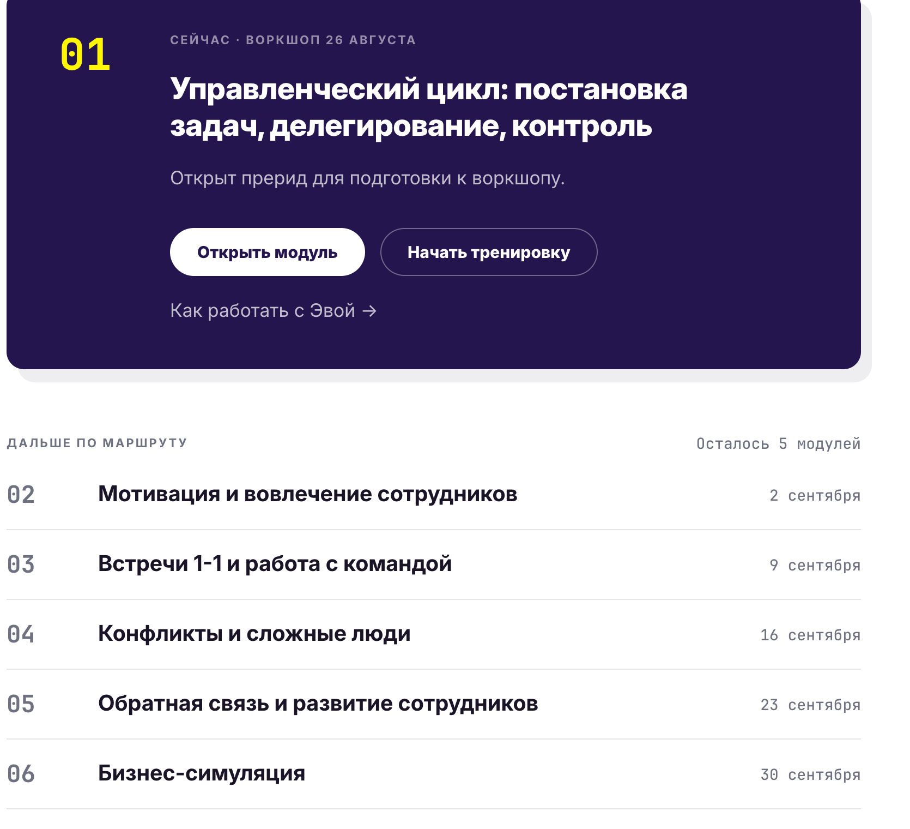
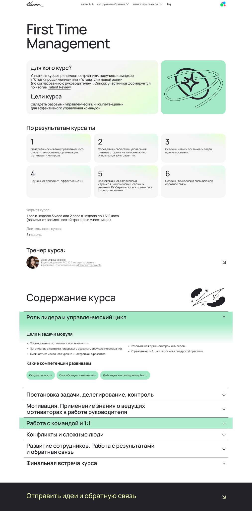
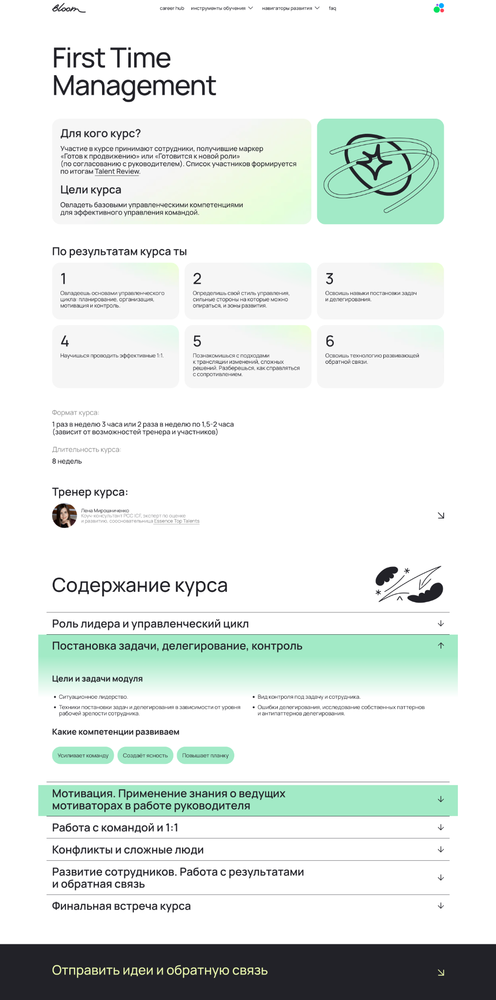
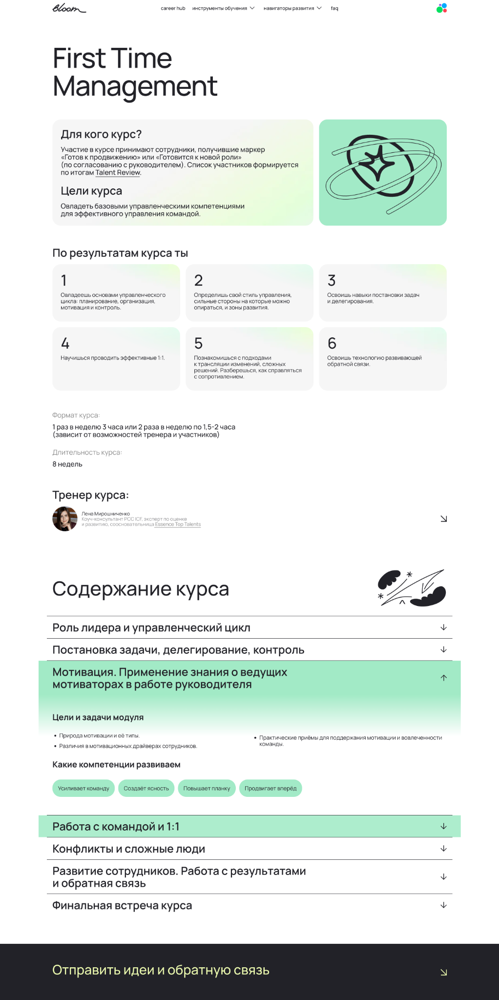
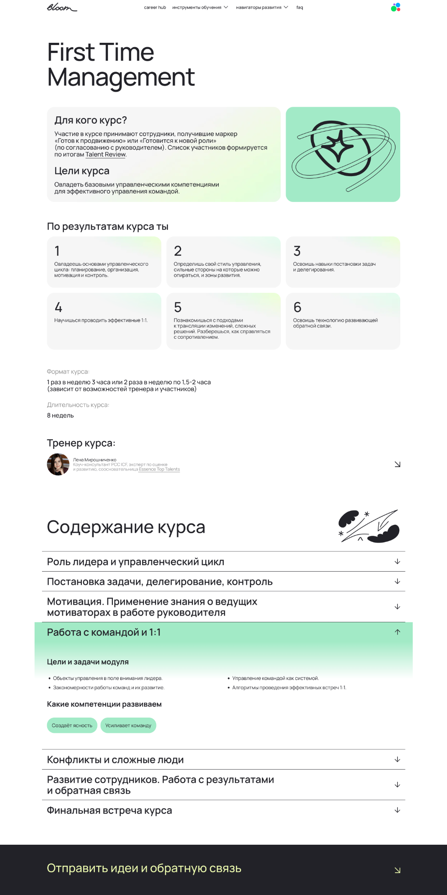
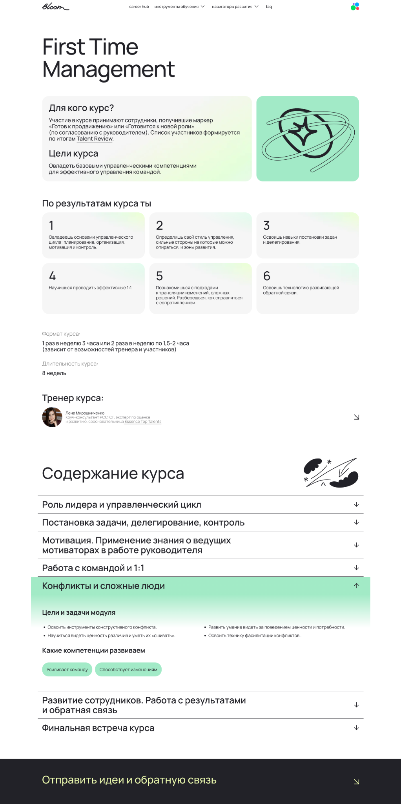
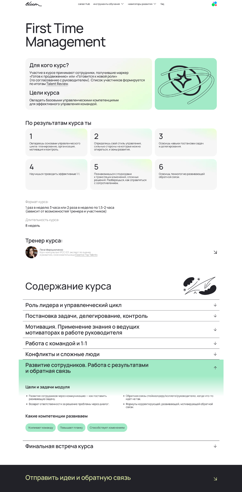
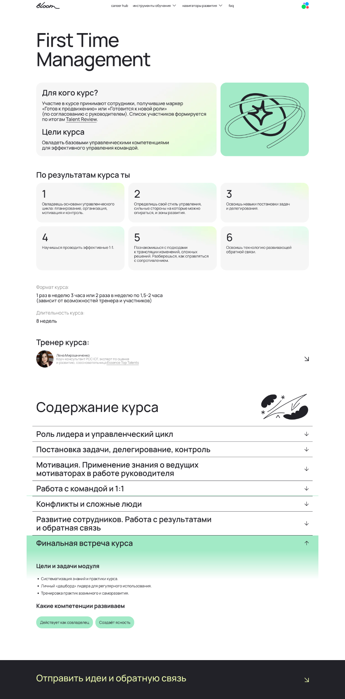

Для кого
Для сотрудников, получивших маркер «Готов к продвижению» или «Готовится к новой роли» по согласованию с руководителем.
Личный учебный архив · 26 августа — 30 сентября 2026
Программа курса, опорные конспекты и все присланные материалы — в одном месте.
О курсе
Для сотрудников, получивших маркер «Готов к продвижению» или «Готовится к новой роли» по согласованию с руководителем.
Овладеть базовыми управленческими компетенциями для эффективного управления командой.
1 раз в неделю по 3 часа или 2 раза в неделю по 1,5–2 часа
26 августа — 30 сентября 2026
Елена Мирошниченко
Коуч-консультант PCC ICF, эксперт по оценке и развитию, соосновательница Essence Top Talents.
На выходе
Овладеешь основами управленческого цикла: планирование, организация, мотивация и контроль.
Определишь свой стиль управления, сильные стороны и зоны развития.
Освоишь навыки постановки задач и делегирования.
Научишься проводить эффективные встречи 1:1.
Познакомишься с подходами к трансляции изменений и сложным решениям.
Освоишь технологию развивающей обратной связи.
Актуальный маршрут · 2026
Подробная программа и материалы будут добавлены, когда появятся в архиве.
Материалы · 01
Прерид первого занятия
Постановка задач, делегирование и контроль
Исходная программа
Актуальный маршрут стоит первым. Остальные экраны сохранены как расширенное описание тем курса.








{kind=link}
{kind=link}
{kind=link}
{kind=link}
{kind=link}
{kind=link}
{kind=link}
{kind=link}